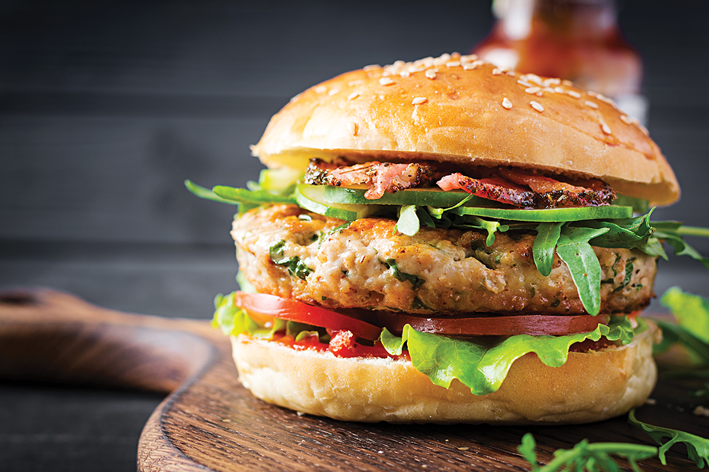

Chef's Signature Burger

The Classic Burger
A seasoned ground beef patty (typically 80/20 lean-to-fat ratio)
formed and grilled or pan-seared until juicy and caramelized on the outside.
Served on a lightly toasted brioche or sesame bun, layered with fresh lettuce,
ripe tomato, sliced onion, pickles, and a signature burger sauce made from
mayonnaise, ketchup, mustard, and spices.
Calories & Nutrition
- Calories: 550–750 kcal
- Serving Size: 1 burger (220g–280g)
- Protein: 25–35g
- Carbohydrates: 35–50g
- Fat: 30–45g
- Allergens: Contains gluten, dairy, and egg
- Main Ingredients: Beef patty, bun, lettuce, tomato, onion, pickles, burger sauce
Ingredients
- Beef patty – Ground beef (80/20), salt, black pepper
- Bun – Brioche or sesame bun
- Lettuce – Fresh iceberg or romaine lettuce
- Tomato – Ripe sliced tomato
- Onion – Fresh sliced white or red onion
- Pickles – Sliced dill pickles
- Burger sauce – Mayonnaise, ketchup, mustard, spices
Allergen Notice:
Please inform us of any food allergies before ordering.
Kitchen Notice:
Prepared in a kitchen that handles gluten, dairy, and eggs.
← Back to Menu
Order Now